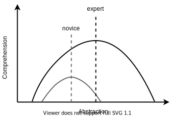

class: slide-title <p> <a href="https://third-bit.com/sdxpy/">Software Design by Example</a> </p> <h1>Introduction</h1> <div class="bottom"> <a href="../">chapter</a> </div> --- ## The Problem - Most data scientists are self-taught programmers - Often know they have gaps in their knowledge - And other gaps they don't even know about --- ## Complexity - One of those gaps is software design - A large program is more than just a dozen small programs - Most programming language features exist to manage complexity <figure> <img src="../complexity.svg" alt="Complexity and size"/> </figure> --- ## How to Learn Design - Best way to learn design is to analyze, critique, and recapitulate examples - These lessons use small versions of programming tools as examples - Generally accessible to people who are programming - Introduce some fundamental ideas in computer science - People who know how tools work are (hopefully) more likely to use them well --- ## Who's Your Audience? <figure>  </figure> - Experts understand lower and higher abstraction levels than novices - Preferred level shifts with experience - Code that is optimal for one reader may not be optimal for another --- ## Audience - Maya has a master's degree in genomics - Knows enough Python to analyze data from her experiments - But is struggling to write code that other people (including her future self) can use - These lessons will teach her how to design, build, and test large programs in less time and with less pain --- ## Prerequisites - Write Python programs using lists, loops, conditionals, dictionaries, and functions - Puzzle your way through Python programs that use classes and exceptions - Run basic Unix shell commands like `ls` and `mkdir` - Read and write a little bit of HTML - Use Git to save and share files --- class: aside ## In Addition - Yim teaches two college courses on web programming - They are frustrated that so many books talk about details but not about design and use examples that their students can't relate to - This material will give them material they can use in class and starting points for course projects --- ## The Big Ideas - Source code is just text. - A program in memory is just a data structure. - We can control and inspect programs while they are running. - A week of hard work can sometimes save us an hour of thought. --- ## Usage - Written material: [Creative Commons - Attribution - NonCommercial 4.0 International license][cc_by_nc] (CC-BY-NC-4.0) - Code: [Hippocratic License][hippocratic_license] - Source available in [our Git repository][book_repo] - Can all be read on [our website][book_site] --- ## The Author [**Greg Wilson**](https://third-bit.com/) has worked in industry and academia for 40 years, and is the author, co-author, or editor of over a dozen previous books. He was the co-founder and first Executive Director of Software Carpentry and received ACM SIGSOFT's Influential Educator Award in 2020. <div class="center" markdown="1"> </div> --- ## Dedication <div class="center"> <em> This one's for Mike and Jon: <br> I'm glad you always found time to chat. </em> </div> --- class: summary ## Summary <figure class="fullwidth"> <img src="../syllabus.svg" alt="Syllabus"/> </figure> [book_repo]: https://github.com/gvwilson/sdxpy/ [book_site]: https://third-bit.com/sdxpy/ [cc_by_nc]: https://creativecommons.org/licenses/by-nc/4.0/ [hippocratic_license]: https://firstdonoharm.dev/